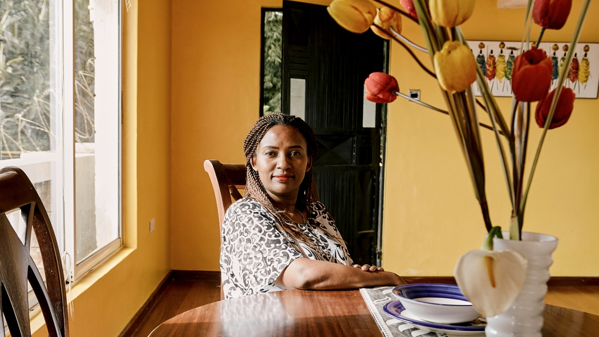

Want to house COVID-19 responders? Here’s how
We’re answering the most common questions about our new Frontline Stays program.
By Airbnb on 26 Mar 2020·7 min read
Updated 1 Oct 2020

As the COVID-19 pandemic disrupts everyday life around the world, our resilient community of Airbnb hosts has been looking for ways to stay involved. Inspired by our host community, we created the Frontline Stays program that lets hosts offer their space to healthcare staff and first responders on the front lines of COVID-19.
Both individual COVID-19 responders and those working through our business, nonprofit, and government partners are able to book stays, and we're actively working with global health organizations to keep safety and cleaning protocols up to date for the hosts and guests who participate.
To help support our community, we’re answering some of the most common questions we hear from hosts.
Program eligibility and how to participate
How do I get involved?
You can help by hosting for free or for a discount. By hosting, you can provide a comfortable and convenient place for COVID-19 responders to stay. We'll ask you to commit to Airbnb’s enhanced cleaning protocol or choose to have a 72-hour block after each stay.
Is my space eligible for the program?
To host COVID-19 responders on Airbnb, your space needs to be an entire place without any other guests present. There may be additional eligibility requirements depending on where you host, which you’ll find in the Help Center.
As a host, do I need to be aware of any special rules?
Hosts who participate in the program (and any property managers or professional cleaners who support them) will need to follow social distancing practices—that means minimizing person-to-person contact during check-in, staying 6 feet away from guests if in-person contact is required, and not entering the property at any time during a guest’s stay unless required. We strongly recommend offering self check-in when possible.
Hosts are also required to either adopt Airbnb’s enhanced cleaning protocol, or wait 72 hours between reservations to properly clean, sanitize disinfect, and turn over the space for future guests. There may be additional guidelines depending on where you host, so please follow any requirements published by your local government or health authorities.
Find out more about responsible hosting
How should I clean my space before and after hosting a COVID-19 responder?
In June, we launched Airbnb’s enhanced cleaning protocol to help hosts prepare for evolving guest needs during COVID-19 and beyond. Please visit Airbnb.com/cleaningresources to explore the latest guidelines about creating a clean and sanitized stay, learn how to commit to the cleaning protocol, and more. We recommend all Frontline Stays hosts adhere to the updated standards and take advantage of the additional resources, like a handbook with detailed checklists, to help prepare for guests who are COVID-19 responders.
I host in a city that’s under a shelter-in-place order. Am I allowed to enter my space to clean it?
Please check with your local authorities for what is and isn’t allowed under your city’s shelter-in-place order.
Can I opt out if I change my mind?
Yes. You can opt out of the Frontline Stays program anytime in your settings.